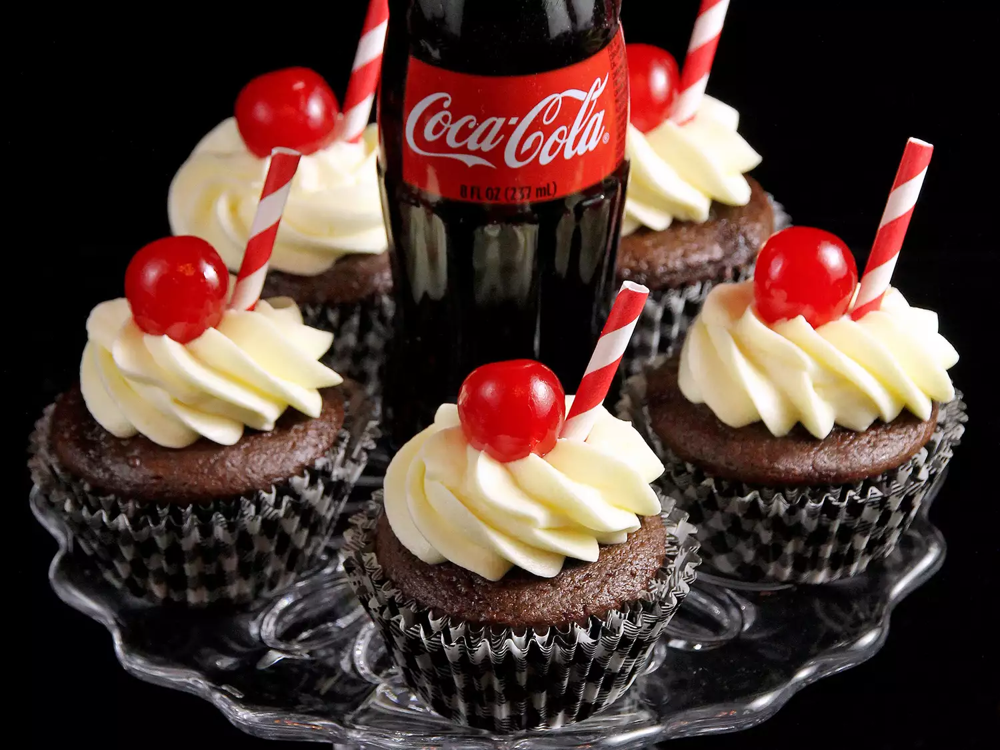

Cola Cake
Home

Description
This recipe uses a can of soda instead of the oil, water, and eggs added to packaged cake recipes. Cake comes out surprisingly fluffy and moist with a slight kick to it that people love. Experiment with different flavored sodas for slightly differing tastes.
Ingredients
- 1 (15.25 ounce) package chocolate cake mix
- 1 (12 fluid ounce) can or bottle cola-flavored carbonated beverage (such as Coke®)
Steps
- Preheat the oven to 350 degrees F (175 degrees C). Grease a 9x13-inch baking dish.
- Combine cake mix and cola in a large bowl. Use a hand whisk to mix ingredients until light and smooth, about 3 minutes. Pour batter into prepared baking dish.
- Bake cake in preheated oven until a toothpick inserted in the center of the cake comes out clean, 35 to 40 minutes. Allow cake to cool before cutting.